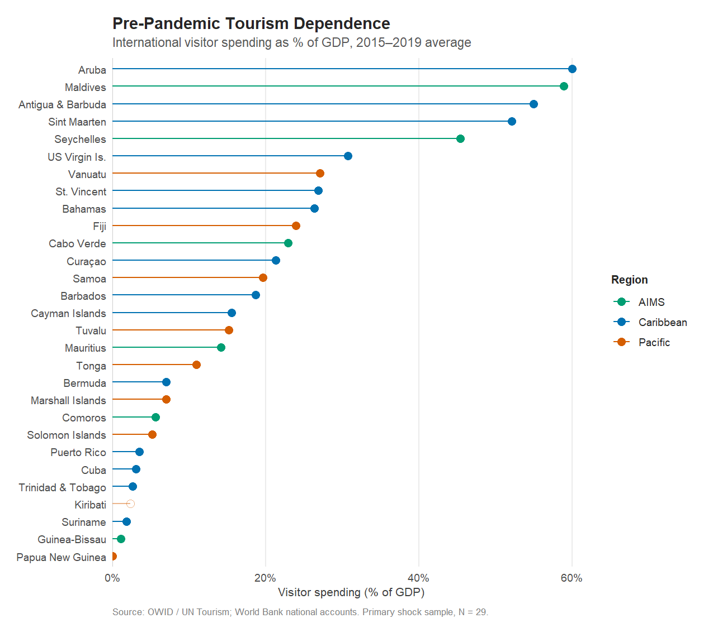
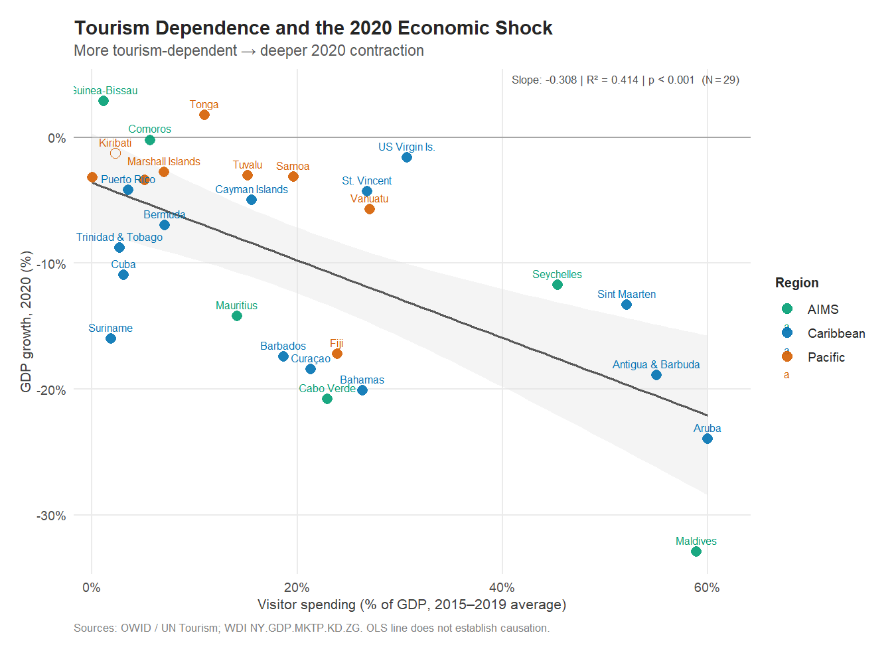
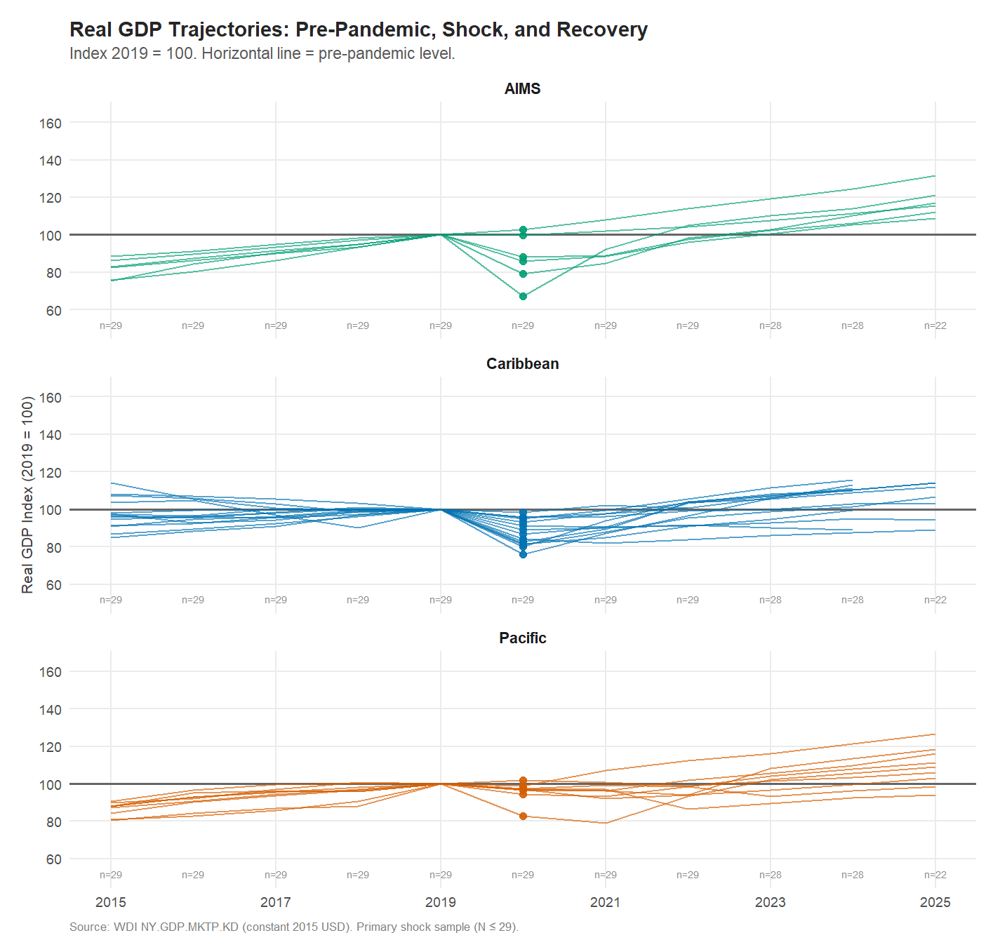

Island Time, Interrupted
Tourism Dependence and the COVID Cliff in Small Island Developing States
When Tourism Stops
For most countries, a pandemic is a health crisis with economic side effects. For a small island economy built on international tourism, it is something else entirely: an abrupt, near-total halt to the primary source of income.
When COVID-19 closed borders in early 2020, international arrivals fell by roughly 74 percent globally. In the Maldives, where visitors routinely spend more than half the country’s entire economic output in a year, that collapse was not a disruption to one sector — it was a contraction of the economy itself. Across the Caribbean and the Pacific, islands that had spent decades integrating their economies around the movement of foreign visitors suddenly found themselves cut off from their primary engine of growth.
This analysis examines a straightforward empirical question: Were small island economies that depended more on international tourism before the pandemic more severely affected in 2020?
The short answer, for the primary measure used here, is yes. The more interesting question — what happened next — turns out to have a less tidy answer.
Measuring Economic Exposure
Before comparing exposure to outcomes, it is necessary to define what “tourism dependence” means. The answer is not as obvious as it appears.
Two main measures are used here, and they are not interchangeable.
The primary measure is international visitor spending as a share of GDP — the amount international tourists spend in a country relative to the size of that country’s economy. This comes from UN Tourism statistics, processed by Our World in Data (OWID). It is the most direct expression of how economically exposed an island is to the movement of foreign visitors: a high value means that a large fraction of economic activity depends on people who arrive from abroad.
The complementary measure is international tourism receipts as a share of total exports, from the World Bank’s World Development Indicators (WDI). It asks a related but different question: how important are tourism earnings relative to everything else the country sells or earns internationally? For export-intensive economies, this ratio can look quite different from the first measure.
The data for this analysis cover 29 in the primary sample — islands from the Caribbean, Pacific, and AIMS (Atlantic, Indian Ocean, Mediterranean, and South China Sea) regions with both a usable pre-pandemic tourism baseline and 2020 real GDP growth data. These are drawn from a candidate universe of 58 small island developing states and associated economies identified through the UN-OHRLLS SIDS list.
The range is striking. At one extreme: Aruba and the Maldives, with visitor spending averaging nearly 60 and 59 percent of GDP over 2015–2019. Antigua and Barbuda, Sint Maarten, and Seychelles were not far behind, all above 40 percent. At the other extreme: Guinea-Bissau and Trinidad and Tobago, where tourism plays a marginal role relative to the broader economy.
The differences matter because they translate directly into the scale of the exposure question. An economy where foreign visitors account for 60 percent of GDP is simply not the same kind of entity as one where they account for 5 percent — not in structure, not in vulnerability, and not in what it meant when international travel stopped.
The 2020 Shock

The association in Figure 2 is visible without a regression line: the more an economy depended on international visitor spending before the pandemic, the worse its 2020 economic performance tended to be.
Fitting a simple regression across these 29 economies, each additional percentage point of visitor spending relative to GDP was associated with roughly 0.31 percentage points of additional GDP contraction in 2020. The relationship explains approximately 41% of the variation in 2020 growth rates across these economies (R² = 0.414, p = < 0.001).
That is a substantial degree of predictability for a bivariate, cross-sectional relationship involving 29 diverse economies from three different ocean regions.
What drives this association, and what might complicate it
The Maldives deserves specific mention. With visitor spending averaging about 59 percent of GDP before the pandemic and a GDP contraction of roughly 33 percent in 2020, the Maldives is the most extreme observation in the sample — and the most statistically influential. Excluding it reduces R² from 0.414 to approximately 0.31, but the association remains statistically significant (p = 0.002). The result does not depend on a single outlier.
The association also holds when:
- The 2017–2019 mean replaces the 2015–2019 baseline (slope = -0.32, R² = 0.428).
- The analysis is restricted to 24 economies with data for both tourism indicators — isolating the measurement from sample-composition effects (R² = 0.489).
This is an observational cross-sectional analysis of 29 economies. It documents that economies with greater tourism exposure tended to experience more severe contractions; it does not establish that tourism dependence caused those contractions. Confounders — pre-existing fiscal pressures, the timing of border closures, domestic containment measures, economic diversification — are not accounted for. The pattern is consistent with the economic logic, but consistent-with is not the same as established-by.
The complementary indicator tells a more ambiguous story
When the analysis uses the World Bank’s tourism receipts measure instead — receipts as a share of total exports rather than visitor spending as a share of GDP — the results are noticeably weaker. In the full WDI sample of 35 economies, the association is not statistically significant (R² = 0.1, p = 0.064). In the 24-economy common sample — the same countries analyzed with both indicators — the association is stronger and statistically significant (R² = 0.233, p = 0.017), though the model explains a more modest share of the variation.
The two indicators are correlated but not identical. They divide by different denominators and cover different sets of economies. Their divergence in results partly reflects those conceptual and sample differences, and partly reflects specific outlier cases — particularly Timor-Leste, which has high receipts relative to exports but experienced a less severe 2020 contraction than its tourism-receipts exposure would predict.
The full comparison of all eight regression specifications — two indicators, two samples, two baseline windows — is in the Technical Analysis.
Recovery: A More Complicated Picture

By 2024, 21 of 28 economies with available data (75 percent) had returned to or exceeded their 2019 aggregate real GDP. The collapse and the rebound, for most of these islands, traced a steep V.
But the recovery picture is more textured than that simple count suggests.
Two kinds of recovery
Aggregate GDP and GDP per capita measure different things, and in small island economies, the gap between them matters. An economy where population has grown cannot treat a return to 2019 total output as a return to 2019 living standards; an economy where population has declined may show recovering per-capita output even when total output has not fully returned.
Of the 28 economies with 2024 real GDP data:
- 20 of 28 had restored real GDP per capita to 2019 levels by 2024 (71 percent).
The gap runs in both directions. Four economies — Seychelles, Antigua & Barbuda, Papua New Guinea, Vanuatu — had restored total GDP but not GDP per capita by 2024. In the opposite direction, three economies — Curaçao, Marshall Islands, Tuvalu — had restored GDP per capita but not total GDP. These differences are consistent with the influence of population change on aggregate and per-capita output, although this analysis does not isolate population dynamics as a cause.
Seven economies had not recovered aggregate GDP to 2019 levels by 2024: Suriname, Cuba, Tuvalu, Trinidad & Tobago, Marshall Islands, Curaçao, Solomon Islands. For several of these, economic difficulties extended well before and beyond the pandemic itself.
Tourism dependence did not predict recovery
Here the story departs from what the shock analysis might lead one to expect. Among these 28 economies, pre-pandemic tourism dependence was not significantly associated with 2024 recovery (Pearson r = 0.21, p = 0.275).
This contrasts with the initial shock, where greater tourism dependence was associated with more severe economic contraction. Several highly tourism-dependent economies — including the Maldives, Seychelles, Bahamas, and Aruba — experienced sharp contractions in 2020 followed by substantial rebounds as international travel resumed.
The distinction is important. Pre-pandemic tourism dependence helps explain exposure to the initial shock, but it does not, by itself, explain where an economy stood relative to its 2019 GDP level four years later. Different recovery trajectories can produce similar endpoint results, and a single aggregate GDP index cannot capture the full economic experience of the intervening years.
This does not mean tourism-dependent islands recovered better, or were more resilient. It means that aggregate GDP in 2024 relative to 2019 is a limited lens for evaluating economic recovery. It says little about employment during the contraction, debt accumulated to finance the rebound, whether the quality of growth improved, or whether anything changed in the underlying structure of exposure.
What This Adds Up To
The 2020 economic shock in small island economies was not random. It tracked, with considerable regularity, how much of an economy’s activity depended on international visitors.
This cross-sectional association — observed across economies as different as the Maldives and Papua New Guinea, Bermuda and Kiribati — does not by itself explain why exposure translates into contraction; that depends on fiscal buffers, economic policy, domestic alternatives, and factors this analysis cannot measure. But the association is strong enough, and consistent enough across different specifications, to be informative.
The recovery, by contrast, was not neatly structured by prior exposure. Most island economies found their way back to 2019 aggregate GDP by 2024. Some had not. The differences in recovery paths appear to reflect factors beyond the initial tourism shock — factors that vary from one economy to another and that a simple cross-sectional model cannot untangle.
Two things follow. First, tourism dependence is a meaningful indicator of exposure to travel-disruption shocks, but it is not a full description of economic vulnerability. Second, aggregate GDP recovery by a particular calendar year is an incomplete metric for evaluating how island economies fared through the pandemic and its aftermath.
The full picture requires looking harder at what happened in individual economies — not just at the pattern across them.
Technical analysis and model results: Analysis
Indicator definitions and data sources: Data Dictionary
Research design and reproducibility: Methodology
Analysis conducted in R 4.4.1. Data retrieved November 2026.